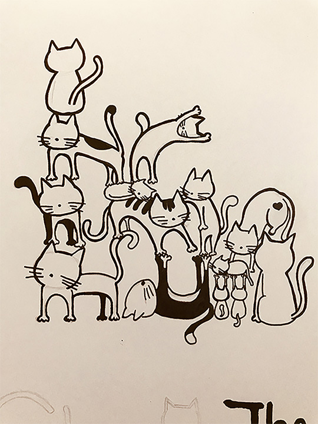
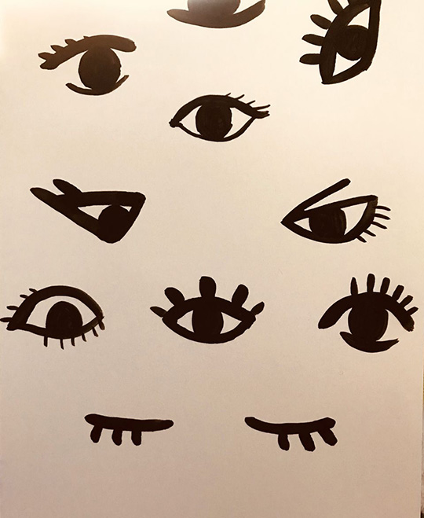
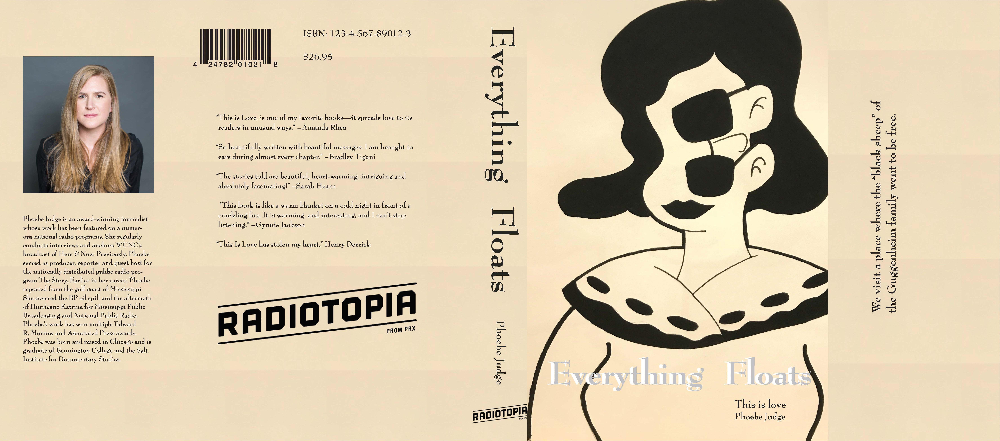
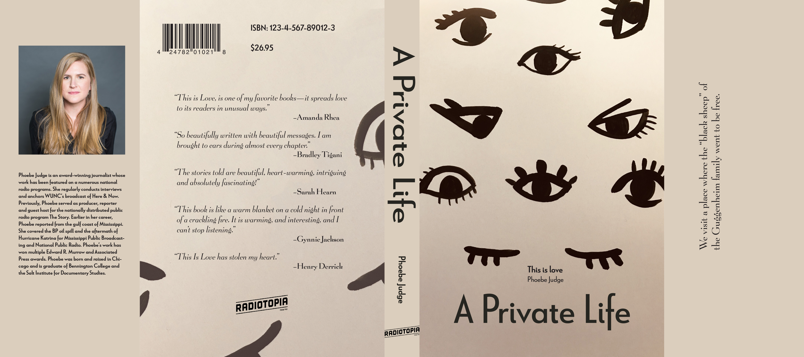
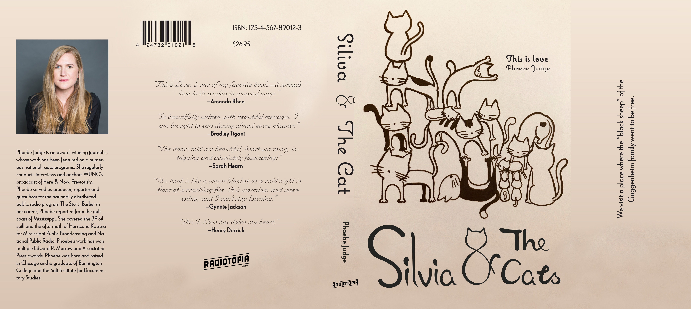

Book Cover
ART 125-Intro to Graphic Design
For this assignment, I drew the cover based on the content of the story. After trying different drawing methods, I decided to choose hand drawing. Compared with pigments with rich colors and fine computer graphics, I think the coloring with ink after the pencil is drawn is simple and warm.
Service: Graphic Design
Skills: Sketching, Adobe Photoshop, Adobe Illustrator, Adobe Indesign, Printing
& Cutting